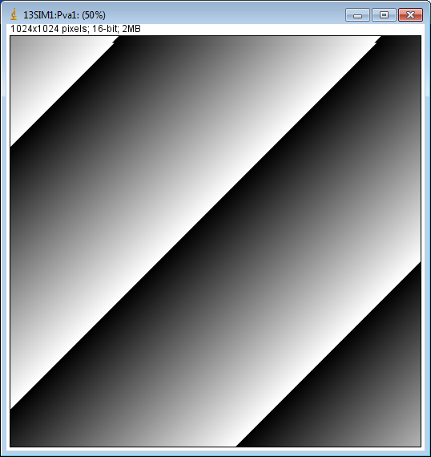
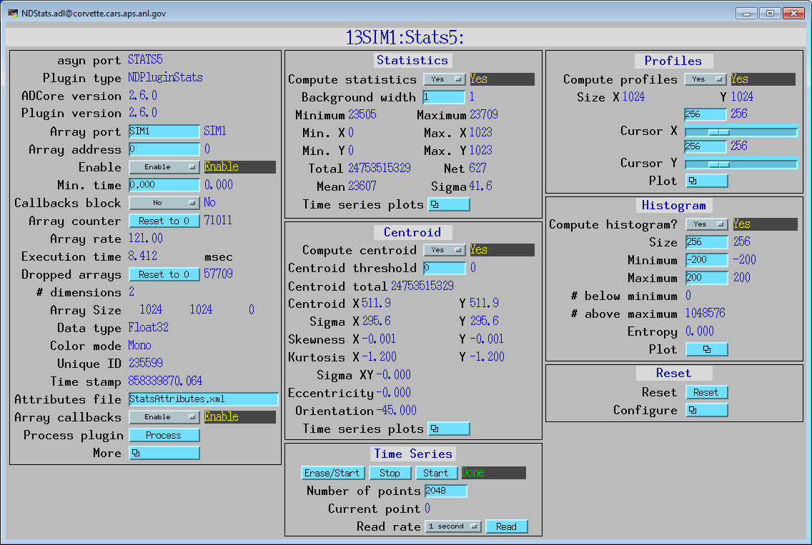
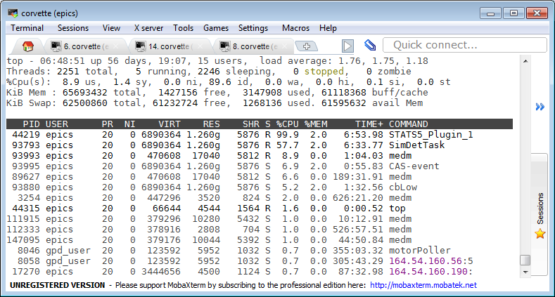
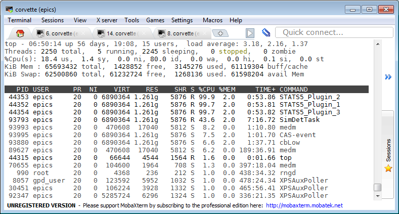
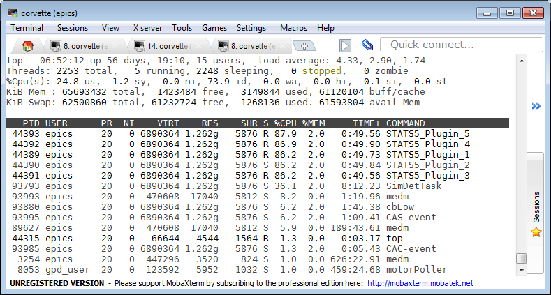

Performance example
The following example shows how increasing the number of threads from 1 to 5 in the NDPluginStats statistics plugins allows it to keep up with the simDetector running at about 485 frames/s. It also demonstrates the effect of changing SortMode=Sorted and SortMode=Unsorted.
The images were generated by simDetector generating 1024x1024 Float32 images at about 485 frames/s as shown in the following 2 medm screens.
The NDPluginStats plugin was configured to perform all of the statistics calculations (centroid, histogram, etc.) to maximize the time required to process each array, as shown in the following medm screen.
The statistics plugin was first run with just one thread, as shown in the NDPluginBaseFull.adl screen. This screen can be opened with the More related display from the NDPluginBase.adl screen, which is embedded on the left hand side of all plugin medm screens. Note the following on this screen:
The execution time is 8 ms.
The frame rate is 120 frames/s, which is consistent with the execution time.
The queue free size is 0, and the number of dropped frames is large because the plugin cannot keep up with the rate at which the simDetector is sending frames (485 frames/s).
SortedMode=Sorted is selected. Because there is only 1 thread SortMode does not really matter, the order of the output NDArrays will be the same whether SortMode is Sorted or Unsorted.
The following show the Linux “top” program when the plugin is running with 1 thread as above. Note that the STATS5_Plugin_1 thread is using almost 100% of a core. The simDetector is using about 58% of a core.
The NumThreads PV in the statistics plugin was then changed from 1 to 3, as shown in the following NDPluginBaseFull.adl screen. Note the following:
The execution time is still 8 ms.
The frame rate is now 384 frames/s, which is just over 3 times the value with 1 thread above.
The queue free size is 0, and the number of dropped frames is large because the plugin still cannot keep up with the rate at which the simDetector is sending frames (485 frames/s).
SortedMode=Sorted is selected. Because there are now 3 threads SortMode does matter, because the 3 threads could be producing output NDArrays in the wrong order. However, the number of disordered frames is still large, because dropped input frames will lead to missing values of NDArray::uniqueId on the output arrays, which is counted in the Disordered arrays.
The following show the Linux “top” program when the plugin is running with 3 threads as above. Note that there are now 3 STATS5_Plugin_N threads, each using almost 100% of a core.
The NumThreads PV in the statistics plugin was then changed from 3 to 5, as shown in the following NDPluginBaseFull.adl screen. Note the following:
The execution time is still about 8 ms.
The frame rate is now 482 frames/s, which is just over 4 times the value with 1 thread above.
The queue free size is 200, and the number of dropped frames is 0 because the plugin can now keep up with the rate at which the simDetector is sending frames (482 frames/s).
SortedMode=Sorted is selected. Because there are now 5 threads SortMode does matter, because the 5 threads could be producing output NDArrays in the wrong order. Now the number of disordered frames is 0, because there are no dropped input frames and the SortSize (50) and SortTime (0.05 sec) are sufficient to allow the output frames to be sorted without dropping any output frames (DroppedOutputArrays=0).
The following show the Linux “top” program when the plugin is running with 5 threads as above. Note that there are now 5 STATS5_Plugin_N threads, each using about 87% of a core.
To test sorting of output NDArrays the simDetector was configured to generate 100 arrays in Multiple mode, and the NDFileNetCDF plugin was configured to save 100 arrays in Stream mode. The netCDF plugin received its NDArrays from the STATS5 plugin running with 5 threads as shown above. The test was done 2 times, once with SortMode=Sorted, and then with SortMode=Unsorted. The files are were then read into IDL, using the read_nd_netcdf.pro file that can be found in ADCore/Viewers/IDL.
The following shows the output when reading the file that was written when SortMode=Sorted. attr[0].pvalue is the value of the UniqueId attribute for all 100 NDArrays. Note that the arrays are all in the correct UniqueId order.
IDL> t = read_nd_netcdf('thread_test_5_sorted_001.nc', attr=attr)
IDL> u=*attr[0].pvalue
IDL> print, u
479298 479299 479300 479301 479302 479303 479304 479305 479306 479307
479308 479309 479310 479311 479312 479313 479314 479315 479316 479317
479318 479319 479320 479321 479322 479323 479324 479325 479326 479327
479328 479329 479330 479331 479332 479333 479334 479335 479336 479337
479338 479339 479340 479341 479342 479343 479344 479345 479346 479347
479348 479349 479350 479351 479352 479353 479354 479355 479356 479357
479358 479359 479360 479361 479362 479363 479364 479365 479366 479367
479368 479369 479370 479371 479372 479373 479374 479375 479376 479377
479378 479379 479380 479381 479382 479383 479384 479385 479386 479387
479388 479389 479390 479391 479392 479393 479394 479395 479396 479397
The following shows the output when reading the file that was written when SortMode=Unsorted. Note that the arrays are not in the correct UniqueId order.
IDL> t = read_nd_netcdf('thread_test_5_unsorted_001.nc', attr=attr)
IDL> u=*attr[0].pvalue
IDL> print, u
479398 479399 479400 479401 479402 479403 479404 479405 479406 479407
479408 479409 479410 479411 479412 479414 479413 479415 479416 479417
479418 479419 479420 479421 479423 479422 479424 479425 479426 479427
479429 479428 479430 479432 479431 479435 479433 479434 479436 479437
479438 479440 479439 479441 479443 479442 479446 479445 479444 479447
479448 479449 479450 479452 479451 479453 479454 479456 479455 479457
479459 479458 479460 479461 479463 479462 479464 479465 479466 479467
479469 479468 479470 479471 479472 479473 479475 479474 479476 479477
479478 479479 479480 479481 479482 479483 479484 479485 479486 479487
479488 479489 479490 479491 479492 479493 479494 479495 479496 479497